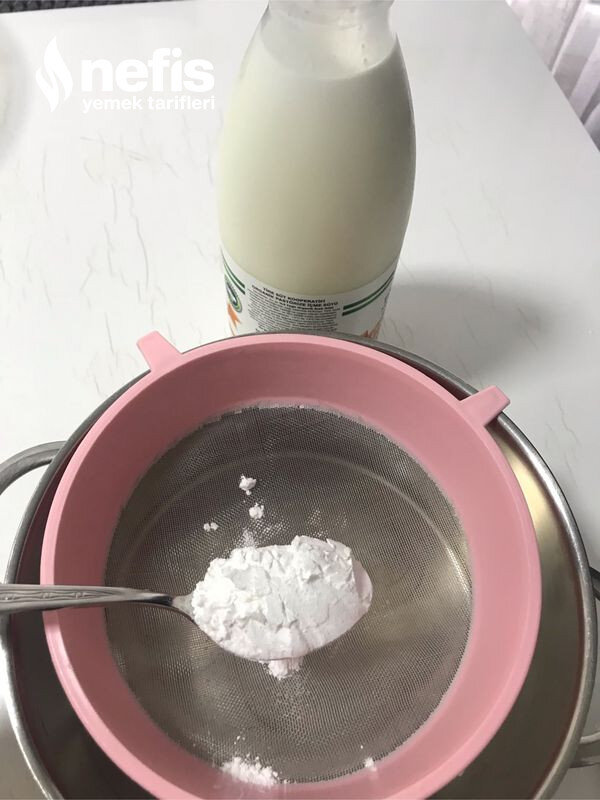

🍽️ 6-8 kişilik⏱️ Hazırlık: 5 dk🔥 Pişirme: 15 dk🏷️ Tatlı Tarifleri🏷️ Sütlü Tatlılar
Malzemeler
- 1 lt süt
- 1 su bardağı şeker
- 2 yemek kaşığı nişasta
- 2 yemek kaşığı un
- 2 yemek kaşığı kakao
- İstenirse 1 paket vanilya
- İstenirse 4-5 parça çikolata
- 1 yemek kaşığı tereyağ veya margarin
Hazırlanışı
- Sütün içine; elenmiş un, nişasta, ve kakaoyu ilave ediyoruz.
- 1 su bardağı şekeri ilave ediyoruz.
- Sürekli karıştırarak pişiriyoruz.
- Kaynamaya başlayınca tereyağı ilave ederek karıştırarak ocağı kapatıp kaselere paylaştırıyoruz ( bu aşamada istenirse çikolata ilave edilebilir).
- Soğuyunca dolaba kaldırıyoruz.
- Nefis pudingimizi dilediğimiz zaman servis yapıyoruz.